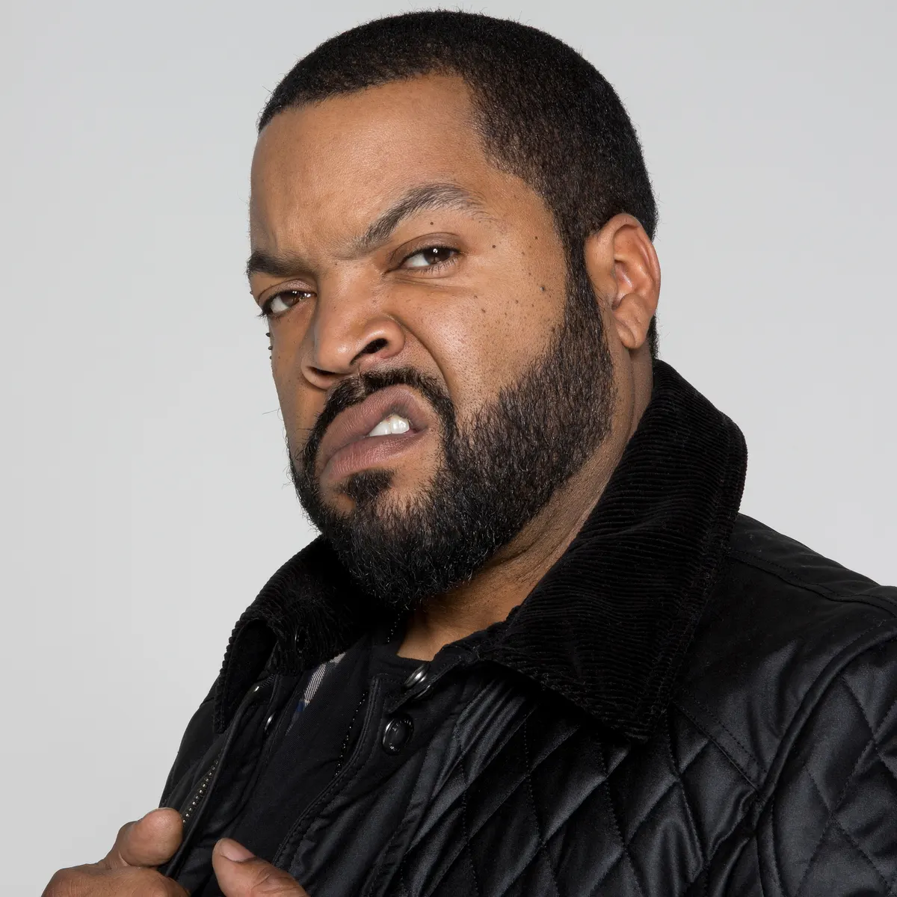

um pouco mais sobre a carreira de ice cube
filmes, inspirações pra musica e mais

- Ele foi classificado número 9 na lista dos 10 Maiores MCs de Todos os Tempos da MTV, enquanto o próprio Snoop Dogg o elegeu o maior MC de todos os tempos. About.com o classificou o número 11 na sua lista dos "50 Melhores MC's do Nosso Tempo".[3] Allmusic o chamou de um dos melhores e mais controversos artistas do hip-hop,[4] assim como "um dos melhores contadores de histórias do rap". Em 2012, a revista The Source o classificou número 14 na sua lista dos 50 Melhores Letristas de Todos os Tempos.
- Na carreira solo, o primeiro álbum foi AmeriKKKa's Most Wanted, lançado em 16 de Maio de 1990, um clássico do Gangsta Rap; o álbum foi praticamente perfeito na íntegra, feito em parceria com The Bomb Squad (time de produção do Public Enemy). Gravado entre 1989 e 1990, o disco foi muito bem sucedido e contribuiu para o aumento da popularidade do rap. Também foi muito controverso e Cube foi acusado de misoginia e racismo. O álbum vendeu mais de dois milhões de cópias e levou disco de platina em 1991. Após o lançamento do álbum, Ice Cube colocou a rapper Yo-Yo como a cabeça de sua companhia e ajudou a produzir seu álbum de estréia Make Way for the Motherlode e também ajudou na produção do álbum de estréia de seu primo Del the Funky Homosapien I Wish My Brother George Was Here. No mesmo ano de AmeriKKKa's Most Wanted, Cube lança Kill at Will, que vendeu bem, se tornando o primeiro EP de hip hop a ganhar disco de ouro e depois de platina